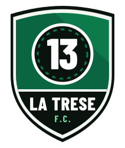
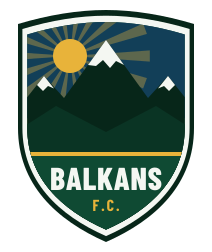
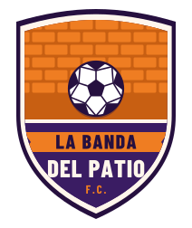
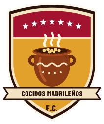
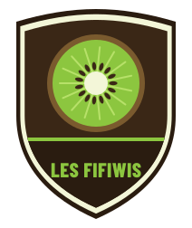
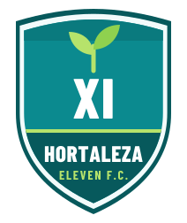
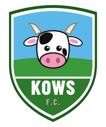

Tinellers FC6–2La Banda del Patio
Tinellers FC6–2La Banda del PatioJornada 2 · 25 de octubre
- Goles
- Alfa Umaro (2), Alejandro Cuevas (2), Oscar Piero y Junior De Jesus
- MVP
- Arian Burguillo
Calendario y resultados de la temporada 2026/2027. Jugamos los domingos a las 19:00 en la IDB Almudena, Ciudad Lineal.

Domingo 15 nov
19:00
IDB Almudena, F7: 2
Ciudad Lineal

La Trese FCVisitante · 1º, 9 puntos
| Partido | Resultado u hora | Jornada | Fecha y campo |
|---|---|---|---|
| Octubre de 2026 | |||
 Balkans FC– |
2–3 Victoria | Jornada 1 | Dom 18 octF7: 1 |
 La Banda del Patio |
6–2 Victoria | Jornada 2 | Dom 25 octF7: 1 |
| Noviembre de 2026 | |||
 Cocidos Madrileños FC– |
0–6 Victoria | Jornada 3 | Dom 8 novF7: 1 |
| Jornada 4 | Dom 15 novF7: 2 | ||
| El Club de Carl– |
19:00 | Jornada 5 | Dom 22 novF7: 2 |
 Les Fifiwis |
19:00 | Jornada 6 | Dom 29 novF7: 2 |
| Diciembre de 2026 | |||
 Hortaleza Eleven FC– |
19:00 | Jornada 7 | Dom 13 dicF7: 1 |
| 19:00 | Jornada 8 | Dom 20 dicF7: 1 | |
| Enero de 2027 | |||
| Jagger de Munich– |
19:00 | Jornada 9 | Dom 10 eneF7: 1 |
| 19:00 | Jornada 10 | Dom 17 eneF7: 2 | |
 Kows FC– |
19:00 | Jornada 11 | Dom 24 eneF7: 2 |
| 19:00 | Jornada 12 | Dom 31 eneF7: 2 | |
| Febrero de 2027 | |||
| La Banda del Patio– |
19:00 | Jornada 13 | Dom 7 febF7: 1 |
| 19:00 | Jornada 14 | Dom 21 febF7: 1 | |
| La Trese FC– |
19:00 | Jornada 15 | Dom 28 febF7: 1 |
| Marzo de 2027 | |||
| 19:00 | Jornada 16 | Dom 7 marF7: 2 | |
| Les Fifiwis– |
19:00 | Jornada 17 | Dom 14 marF7: 2 |
| Abril de 2027 | |||
| 19:00 | Jornada 18 | Dom 4 abrF7: 2 | |
| Lineal King– |
19:00 | Jornada 19 | Dom 11 abrF7: 1 |
| 19:00 | Jornada 20 | Dom 18 abrF7: 1 | |
| Secreto Loungue– |
19:00 | Jornada 21 | Dom 25 abrF7: 1 |
| Mayo de 2027 | |||
| 19:00 | Jornada 22 | Dom 9 mayF7: 2 | |
Tinellers FC6–2La Banda del PatioTinellers FC3Partidos jugados
3Ganados
0Empatados
0Perdidos
15Goles a favor
4Goles en contra
Fantasy Tinellers: ficha a cinco jugadores, elige capitán y suma puntos cada jornada. Gratis y sin dinero.